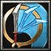

年少時跟父親新免無二齋學習當理流兵法。從十三歲與新當流有馬喜兵衛比武開始，直到二十八歲，這 期間與其他流派比武六十餘次，據說一次都未敗過。武藏二十九歲時在嚴流島跟當時名滿天下的劍士佐佐木小次郎決鬥，用自製的四尺二寸長的木刀將小次郎斬於劍 下，一戰成名。在二十余歲時，武藏便以"圓明一流"自成一派。並于慶長十年（1605年）寫成劍術書《兵道鏡》。但他對己的劍術始終不滿意，認 為沒有達到極境。三十歲後，武藏繼續修業，終於在自己五十歲左右練成了使用大小兩刀（即一之太刀與二之太刀）的劍術。這就是著名的--- "二天一流"。 敏捷型近戰英雄
法術 ：Ｂ 輔助 ：Ａ 一對一人或者一對多人皆擅長，且精通追擊 敏捷：32+2.80（主要） 智慧：20+2.00 
Ｗ[主動] 奧義．弧月斬解除所有負面效果並獲得魔法免疫，每0.2秒造成範圍250內所有敵人[100/150/200/250]點傷害，持續0.5秒。 消耗法力[100/120/140/160]，等待時間[8/7/6/5]秒。 Ｅ[主動] 奧義．連環鋼破
武藏進入無敵狀態突擊目標，造成[100/200/300/400]點傷害並暈眩2秒。然後每0.6秒追斬一次，共[3/4/5/6]次。 消耗法力[160/180/200/220]，等待時間[27]秒。 Ｒ[被動] 二天一流 攻擊時有[40/45/50/55]%的機會造成絕不失誤的[1.3/1.6/1.9/2.2]倍傷害。  自身飛翔至空中匯集全身的力量降落地面時，把全身的靈氣釋放造成範圍500內造成[900/1300/1800]傷害。 施法距離1500消耗法力[250/300]，等待時間150秒。 |